————— 2025/06/16 —————
Content warning for violence, sexual assault + child sexual assault, racism (sinophobia), mass murder and genocide.
Two days ago, I watched “The Act of Killing” and then “The Look of Silence”. Both of these films (directed by Joshua Oppenheimer) are documentaries focusing on the mass killings of alleged communists and those opposing Orde Baru (New Order Regime) in Indonesia during 1965-66. I have way too much to say about both films, so I’m dividing them into two blog posts. Here’s the first one covering The Act Of Killing.
I watched the first film blind only with the knowledge that it was a documentary about nationwide anticommunism and genocide. I wasn’t very interested in it at first because it was directed by an American filmmaker based in Denmark, and not by a local who had firsthand or secondhand experience of what had happened here. I think it’s fair for me to be skeptical if the person directing a history film isn’t even from the same continent where the incidents he was covering happened. I sucked it up anyway and watched the film, because as Vincent Bevins puts it in his book “The Jakarta Method” (which covers the same topic):
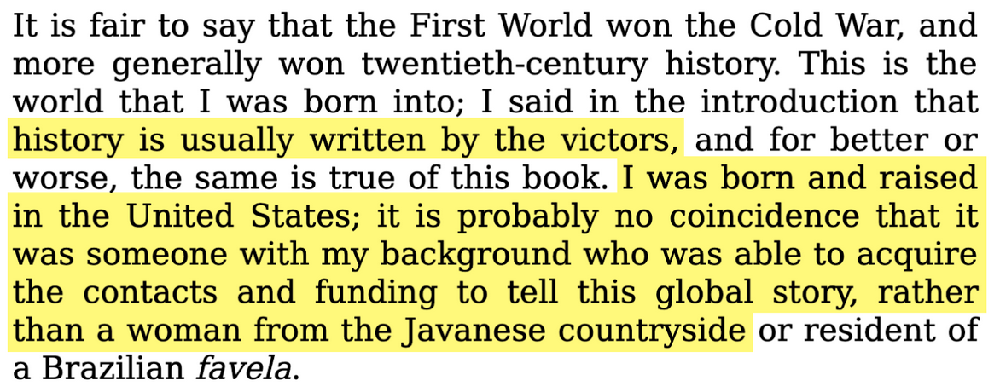
So fine then, I watched the film. And holy shit did it completely subvert my expectations. Rather than it being some random white guy uncovering what had happened in history, Joshua (the director) had somehow gotten the men who performed the mass killings themselves to “explain history” to the camera; by requesting them to re-enact their actions. These men were happy to do so, believing that this is their chance to become “movie stars” like the ones they looked up to in imported American films, believing that this is a chance to teach the younger generation about the importance of anticommunism.
The film’s main subjects were Anwar Congo, a self proclaimed gangster who has killed more than 1000 people with his own hands, and his friends Herman Koto and Adi Zulkadry who also carried out mass killings. There were other subjects filmed, such as paramilitary leaders Haji Anif and Yapto Soerjosoemarno, whose nationalist groups were responsible for further spreading anticommunist propaganda and further pushing executions of alleged communists and opposers of right-wing militaristic regime Orde Baru. These men were backed by high-ranking officials, the army and not only the Indonesian government but western governments, even including the American CIA, who orchestrated the whole anticommunist genocide in the first place, leading to the torture, disappearances and deaths of more than 1,000,000 “alleged communists” (innocent civillians). To this day the whole thing was never acknowledged and brushed under the fucking rug by western governments!!!
For two hours, I sat there and watched how these men who had carried out unimaginable crimes against humanity had somehow walked away free and unpunished from everything they had done. Instead, they grew wealthy from it. For two hours, I had to watch them laugh and smile at the camera, I had to listen to how they bragged, gloated and relished in what they had done to innocent civilians. It was a fucking challenge to watch all the way to the end.
Anwar and his friends demonstrate to the viewers how they tortured and murdered people. In one of the first scenes, we are brought to the second floor of this small shop. This place is where Anwar carried out the first of his many killings. It used to be a cinema where Anwar and his friends first started out as gangsters and collected money by scalping movie tickets. Because of his familiarity with violence, he was recruited to be an executioner.
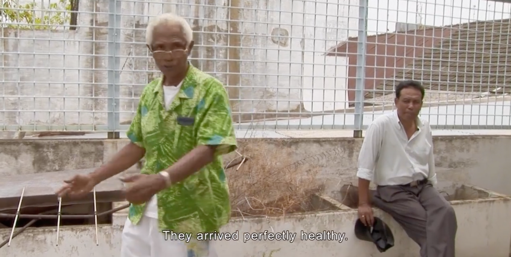
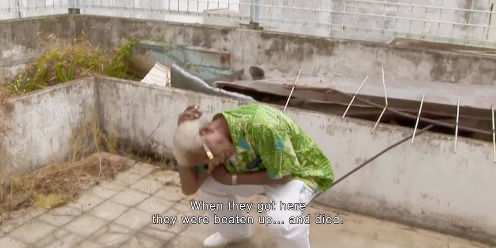
"They arrived perfectly healthy. When they got here, they were beaten up... and died."
He then demonstrates how he would beat perfectly healthy people to death. He complained that this method was inefficient because he had to clean up the area afterwards as the stench of his victims’ blood and flesh was too much. By taking inspiration from the American movies, Anwar devises a new killing method that would be less messy and tiresome:
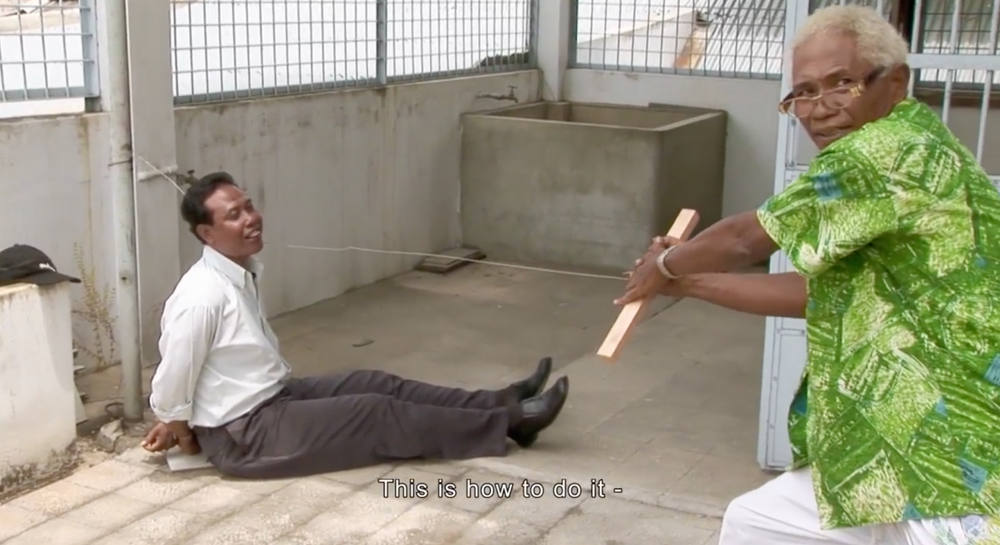
"This is how to do it."
He sits his friend down on the floor and shows the audience how he would tie his victims up first, then tie a long metal wire to one end of a pole, loop it around his victim’s neck and pull the other end as hard as he could, putting his whole body strength into it. This is one of his favorite ways to kill people, and we later see him re-enact this method over and over in various different places. Anwar explained that this method worked well because even if his victim had managed to struggle free from their bindings, they would be unable to grab onto the wire as it dug too deeply into their neck. He even claims that this method was more “humane” as it offers less bloodshed and screams. His friends playing victim would laugh during these re-enactments, making exaggerated choking and gurgling noises and sticking out their tongues and playing dead. After this show of pretend-strangling his friend, Anwar proceeds to dance in front of the camera, laughing and smiling with his friend in an attempt to stay happy after having to recall their past actions, in the very same place where he has strangled countless victims to death.
Syamsul Arifin served as the governor of North Sumatra from 2008-2011. He was raised by Anwar, and claims he is “the only one who isn’t afraid of Anwar”. Syamsul states that the “children of communists” – the children of the victims – are recently being exposed to the truth of what happened, and that they are trying to reverse history. He says that “communism will never be accepted here, because there are gangsters everywhere, and that’s a good thing” – despite being the governor, Syamsul has admitted to being partial to gangsters, because he is able to work with them and have them do his bidding for him. I mean, how else was he able to be the governor. This isn’t anything new. It’s not surprising that so many Indonesians in power have ties to dubious figures. This film was released in 2012, but occurrences like this have persisted for many, many years from Indonesia’s independence in 1945 up until the current year 2025.
In the next scene, Anwar explains how he and other anticommunists extorted money from Chinese-Indonesians.
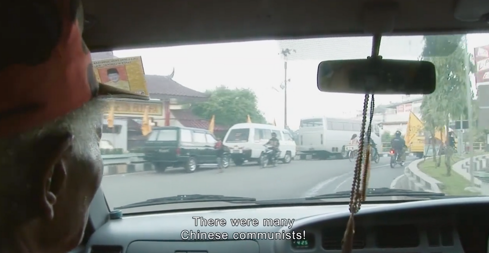
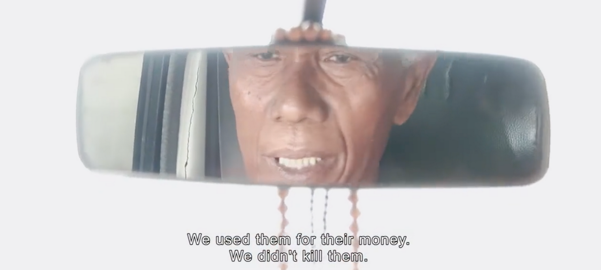
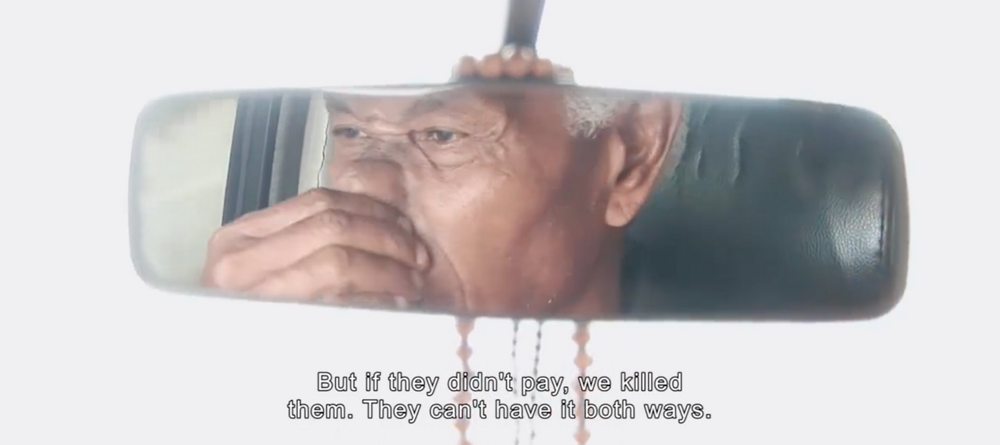
"There were many Chinese communists! We used them for their money. We didn't kill them. But if they didn't pay, we killed them. They can't have it both ways."
For the sake of keeping this blog post as contained within its topic as possible I’m going to go ahead and whittle down what being Chindo (Chinese-Indonesian) in this country is like in regards only to the film. To give context as to why the money here is being extorted from specifically Chinese-Indonesians, it isn’t completely because of racism.
In the past, and moreso in the present, Chindos are generally much wealthier than native Indonesians. This is a generalization – in reality it’s a complicated issue with many sociological and historical factors. To TLDR it as much as possible, the Chinese, many in search of better lives, first came to Indonesia as merchants, and they acted as the middlemen between native Indonesians and Indonesia’s colonizers, the Dutch. This phenomenon isn’t exclusive to Indonesia; in various countries in Southeast Asia such as The Philippines, Thailand and Vietnam, Chinese immigrants were used as economical middlemen. So from the very start, Chinese immigrants in Southeast Asia had an economical advantage. Even then, they weren’t treated on the same level as the colonizers, and due to their status in society, many native Indonesians grew resentful of Chinese immigrants and their descendents. In the present day it’s not surprising to see Chindos owning businesses, ranging from warung sembako to actual lucrative companies. To TLDR it even more; it's a common (and racist) belief that Chindos are rich and very different from native Indonesians.
This way of thinking led to the 1998 Tragedy. Under Western backing (what else is new), the president (dictator) of the time Soeharto had successfully spread systematic discrimination against Chindos. Riots however were triggered because of corruption within the country, which was honestly the fault of a militaristic dictatorship rather than an ethnic group within the country if you ask me! The result was civil unrest, thousands of dead Chindos, hundreds of reported rape cases of ethnically Chinese girls and women, the loss of trillions of rupiah… and actually, it was so bad that the fucking fall of Orde Baru and the resignation of Soeharto happened after he was in power for 32 fucking years. All of this happened because of backing by Western Powers such as the United States. I need to tell you guys about how much I hate the shit that first world countries do to third world countries but… the blog post is getting too long and I have to get back on topic!!!
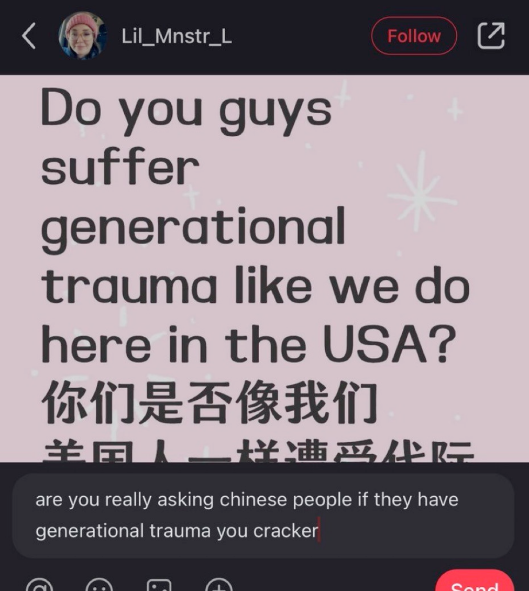
In the film, Safit Pardede, a local paramilitary leader, shows us how he extorts money from local Chindo shop owners. Before walking into a marketplace where they worked, he warns the camera that “orang cina” (an offensive term for Chinese people) can “piss him off sometimes”. His tactics range from giving backhanded compliments to outright threats. To his first victim, Safit compliments her on her mandarin fluency to scare her into giving her money to him. To his second victim, Safit greets him by name, calls him a friend, shakes his hand, and before extorting him for money, telling him that he views him as a friend and not a punching bag like other Chindos. To his third victim, Safit grows impatient and continuously asks for more money. Everytime he is given another money bill, he says things like, “What’s with this shit?”, “It’s not enough. Give us more money or we won’t accept this”, “What’s wrong with you?” And he keeps going until he is satisfied with the amount he has extorted.
This was what they did on camera; I don’t want to think about what they do off-camera.
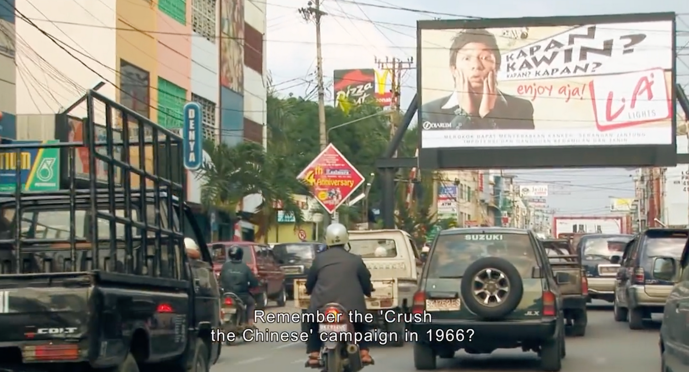
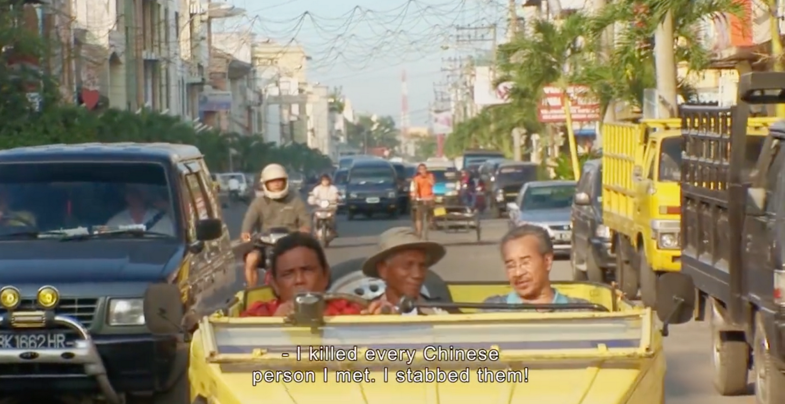
"Remember the 'Crush The Chinese' campaign in 1966? I killed every Chinese person I met. I stabbed them!"
Later, we are introduced to Jusuf Kalla, the vice president of 2014-2019. He gives a speech to paramilitary group Pemuda Pancasila (Pancasila Youth) addressing the accusations that its leaders are gangsters. Instead of debunking these accusations, he laughs on the podium and explains that preman (Indonesian word for gangsters) can be read as “free men, something that the nation needs more of.” He jokes that if everyone working in the government weren’t preman, we’d be a nation of bureaucrats, and get nothing done. He manipulates people into thinking that a shitty government is a good government and that a civilized system is a broken system.
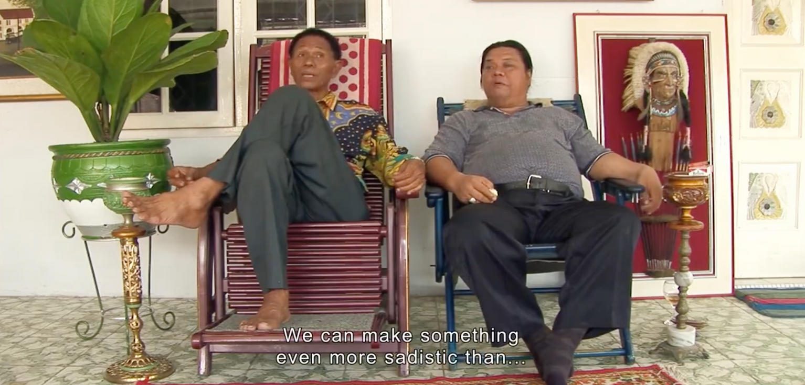
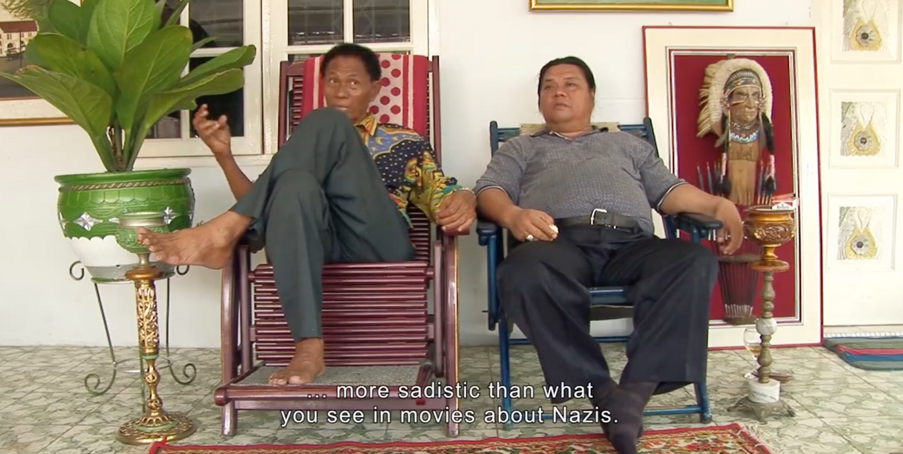
"We can make something even more sadistic than... more sadistic than what you see in movies about Nazis."
Anwar believes that his nightmares of what he has done isn’t from guilt; it’s from nerve damage. Those that went insane from the killings they have committed were simply weak of mind or heart. He says that he needs to go to a doctor and be given medicine that fixes the brain’s nerves and synapses for him to stop having nightmares of his past actions. It is strange to me that many of the executioners seem to share the notion that killing is the worst crime a human can do, so they try their hardest to make up excuses to justify their actions and the consequences of their actions. They called communists “godless creatures that needed to be killed for the good of the nation”. They tried to get the victims to accept that they were going to die before killing them. They were all aware that what they were doing was too cruel to be documented truthfully, but they just kept doing what they were doing, and hypocritically kept denying that what they did was awful.
Paramilitary groups and exterminators would drive around and kidnap innocent people to interrogate them and torture them into admitting that they were communists so that they could kill them and meet their quotas. Sometimes at the dead of night they would lure people out of their houses to kill them and later toss their bodies into ditches. If the person was of chinese descent, sometimes no interrogation was done and they were killed on the spot. It was all in the name of keeping the country free of communists and for a stable and bright future; but in reality it was all because they got rich through western backing to keep killing innocent civilians, and somehow the anticommunist propaganda was as successful as it was nonsensical.
In my opinion, one of the most disturbing scenes in the film came from filming the Pemuda Pancasila members re-enacting the mass killing and raping of Chindo women. They laughed while they recalled what they did. “If they’re pretty, I’d rape them all”, “I’d fuck the shit out of everyone I meet”. It’s always been extremely difficult for me to grasp that the villainization and the fetishization of Chindos weren’t mutually exclusive somehow.
I’m putting in my two cents that the worst shit from the entire film was this line, said in the context of killing and raping Chindos:
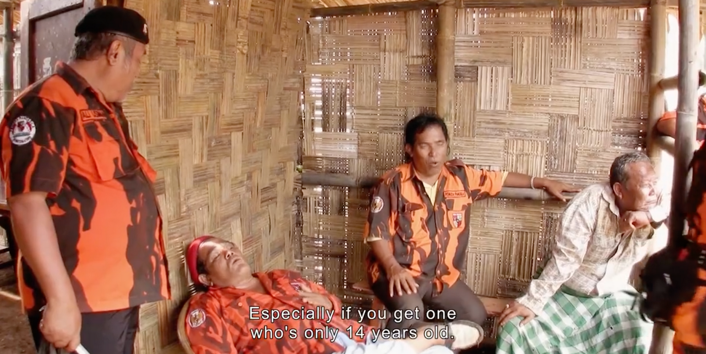
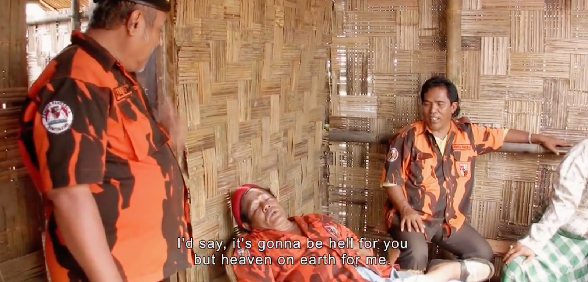
"Especially if you get one who's only 14 years old - delicious - I'd say, it's gonna be hell for you but heaven on earth for me."
For the final scene of the film, Anwar decides that it's his turn to play the role of the victim while his friends Herman and Adi play the role of the executioners. They decided to shoot this scene in a dark room, with Anwar having makeup done on him to look as if he was bloody and beaten. It was his turn to sit on a chair with his hands tied behind his back while his friends shouted at him to set all his valuables on the table, called him a communist, forced him into admitting he was a communist, pointed and poked knives at him threatening to kill him, threatening to break his legs or cut off his hands, directing each other on how to torture him and telling him how he will never see his family again and that he is going to die tonight.
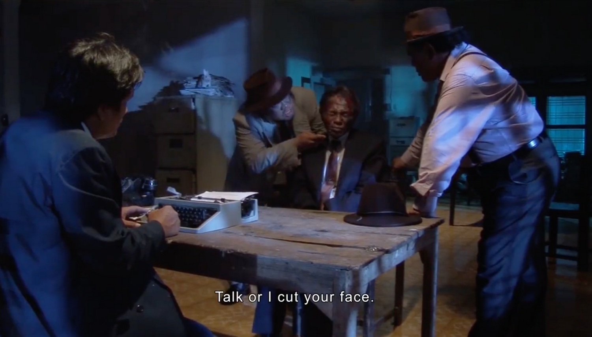
"Talk or I cut your face."
Unlike everyone else who had played the role of the victim, Anwar didn’t smile or laugh at all throughout the whole thing. After being interrogated for a few minutes, he gets a panic attack, asks for a cut, and has to take a break.
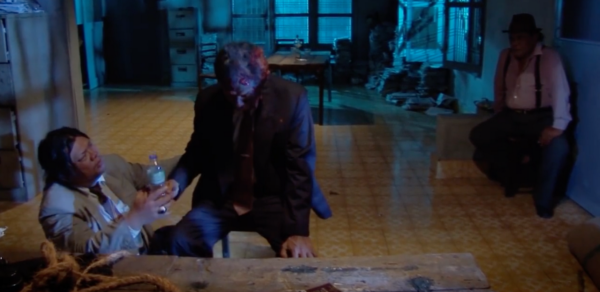
While he was still uneasy, he forced himself to continue with the scene. He was soon blindfolded and a wire was looped around his neck, the same way he did it to his victims.

The wire was then pulled; and after seconds have passed he starts panicking and asks to stop. When his blindfold was taken off, he was breathing heavily, eyes squeezed shut, and muttered “I can’t do that again”. He sat on the chair paralyzed for a while.
After the scene was recorded, Anwar sat in his living room and rewatched the scene. He watched himself get fake-interrogated, fake-tortured and fake-strangled. He watches himself panic in third-person, and reflects on why he acted that way. He concludes, “My dignity here has been destroyed. The fear comes, right there and then. All the terror suddenly possessed my body, it surrounded me, and possessed me.” To this, Joshua replied, “Actually, the people you tortured felt far worse – because you knew it was a film. They knew they were being killed.” Anwar ponders this. He quickly claims that he has truly felt the way his victims felt, and then asks if he had sinned. Anwar starts panicking, tells Joshua that what was done to him in a fake manner, he has done to countless people in a real manner. He asks if all of it is coming back to him; and that he desperately wishes it won’t. He has had nightmares for years. He tries to drown his thoughts out through music and drugs and it isn’t working. He shakes his head, and starts crying.
After this scene was recorded, Anwar returns to the place where he first killed people. The second floor of that small shop. He ponders what he has done in retrospect, after shooting all of these scenes and re-enacting his past actions. Once again he tries to tell the story of all his torturing and killing, only for him to quickly get fatigued and start dry heaving and retching after every sentence that comes out of his mouth. After about three sentences and about five minutes of him trying to vomit, he gives up, and retreats from the place. He exits the shop, the camera behind him, and the film ends.
This whole ending sequence wasn’t satisfying at all for me to watch. My blood boiled when he claimed that he “felt the same as his victims whilst sitting on that chair”, when throughout the entire movie he was bragging, laughing, smiling and gloating about what he did, knowing full well that he’s done completely unforgivable acts. Knowing full well he was torturing and killing innocents and using the most stupid excuses and reasons to justify his actions. He supported his friends and acquaintances who did the same, who killed and raped hundreds or maybe thousands of people. It’s insane to me that it had to take until the very end of the shooting, over hundreds of hours of recording, when he finally played the role of his victims to even form a single shred of empathy for them. Throughout the entire film the audience is reminded of how these people get to walk away free, unpunished, wealthy and in power. Was it supposed to be cathartic to watch Anwar finally come to terms with what he has done? It wasn’t for me. It didn’t feel like he came to terms with his actions. None of his feelings compared to any of the thousand lives he took. Any of the lives that any of the anticommunists took. I don’t know what kind of punishments all those men would need for me to finally feel justified, or what kind of reparations should be given to every individual affected by the sudden disappearance of a loved one, and what acknowledgements should be given to the deaths of over one million innocent civilians. It’s the sad reality that nothing like this will ever take place. No punishments will ever be given, no reparations will ever be provided, and no acknowledgements will ever be made about the country’s dark history. The Indonesian government has always tried their best to pretend none of this happened, or claim that they were on the right side of history, or whatever bullshit it is they do. It’s completely unsurprising but still disheartening that The Act of Killing, as well as The Look Of Silence, are banned films here.
It’s hard to feel safe knowing that Indonesian democracy really only returned five years before I was born, and it’s hard to feel hopeful about the future of the country now that Prabowo is elected. #KaburAjaDulu am I right bros, tapi mau kabur ke mana kalo setengah dunianya lagi menuju fase fasis? I have been writing for three, maybe four hours, over three thousand words that I am unable to convey directly to anyone. I don’t even know if I have managed to properly convey how utterly hopeless this film has made me feel about life in retrospect. I think that’s what made it a crazy good film. I think recallings of history like this is indescribably crucial and what really keeps the country from completely falling apart like it currently is right now, and I’m glad that out of all the things Joshua and his team could have sunk their time into, they decided to sacrifice their mental health and record and edit all of this footage and release it to not only a local but also an international audience.